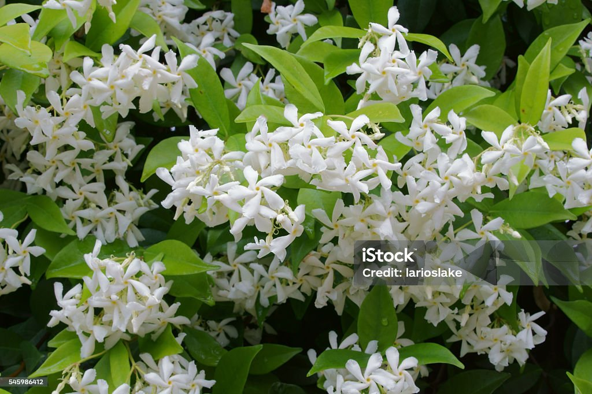
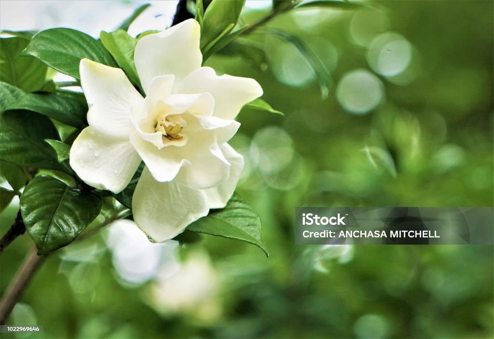
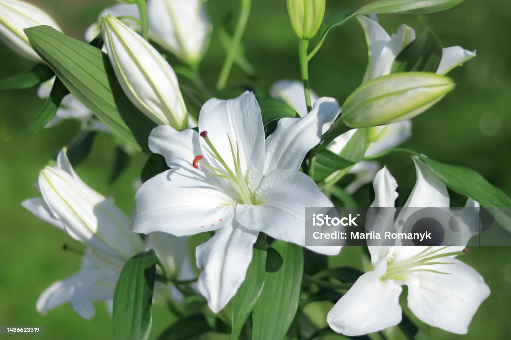

Jazmín (Jasminum spp)
El jazmín es una planta trepadora o arbustiva muy valorada por sus flores blancas o amarillas, pequeñas pero sumamente fragantes. Pertenece a la familia de las Oleáceas y existen más de 200 especies, siendo algunas de las más conocidas el Jazmín común (Jasminum officinale) y el Jazmín sambac.
Aroma y usos:Su intenso y dulce perfume la convierte en una de las flores más utilizadas en la elaboración de perfumes, aceites esenciales, y también en infusiones relajantes. En algunas culturas, el jazmín simboliza la pureza, el amor y la espiritualidad.

Gardenia (Gardenia jasminoides)
La gardenia es un arbusto perenne apreciado por sus flores blancas aterciopeladas y su exquisito perfume. Pertenece a la familia de las Rubiáceas y es originaria de Asia. Su aroma dulce e intenso la hace muy popular en perfumería y aromaterapia.
Aroma y usos:Se utiliza en aceites esenciales, perfumes y como planta ornamental. En algunas culturas, la gardenia simboliza pureza, amor secreto y espiritualidad.

Lirio Blanco (Lilium candidum)
Conocido como azucena o lirio de la Virgen, el Lirio blanco es una planta bulbosa de la familia de las Liliáceas, con flores grandes, elegantes y de un intenso aroma dulce. Es símbolo de pureza, nobleza y renovación espiritual.
Aroma y usos:Su fragancia se usa en perfumería y en decoración floral. También es una flor muy presente en la iconografía religiosa y el arte.